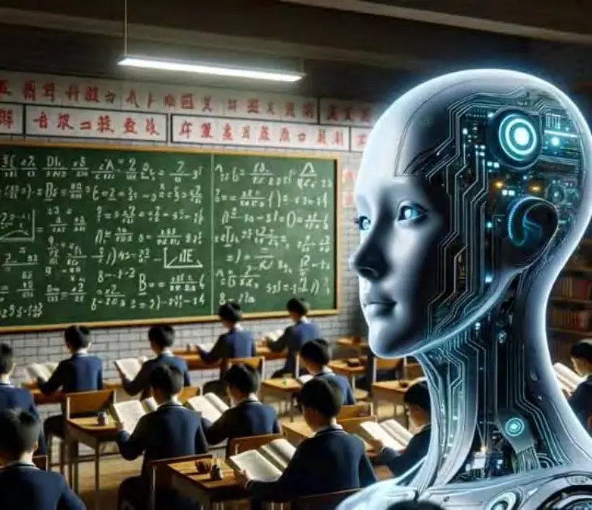
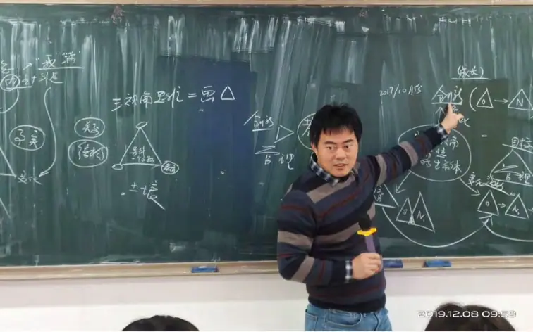

引言：
文化不可建构，文化只能发生
——对“文化建造论”与“文化设计论”的系统批判
一、被设计的文化，注定是虚假的文化
今天的世界，充满着“文化工程”式的幻觉。企业制定“愿景价值观”，政府发布“核心价值体系”，学校推行“校园文化建设”，民族国家书写“文化自信”……在这些看似响亮的命名背后，隐藏的却是一个深层的哲学谬误——文化是一种可以“被设计”“被制造”“被传播”的东西。
这种观点，我们称之为文化建造论，它背后的逻辑是：
“文化是一种可控客体，是某种理念或制度，通过一定的操作手段，可以由主体对客体进行构建与施加。”
这种观念将文化等同于一种“内容包”或“价值清单”，误以为只要写出来、挂起来、贴起来、喊出来，就能“建成”一种文化氛围、文化认同乃至文化认知。它相信文化是可由“上层建筑”施加于“下层行为”的，而实践者所需要做的，只是“对接”“执行”与“转化”。
然而，真正的文化，从来不是建造出来的，而是发生出来的。
文化不是设计之物，而是涌现之物。
文化不是命令之果，而是意义之迹。
它不是权力塑形，而是结构沉积。
这本书，就是要将这一真理带回文化的哲学原点。
二、文化建造论的五大幻觉
我们将文化建造论的根本逻辑总结为“五大幻觉”：
（1）文化客体幻觉
认为文化是可命名、可封装、可管理、可转移的“对象”，而非结构、关系与互动中涌现的动态路径。
→实际上：文化是主-客-互动整体（SIO）中长期意义三律运行的惯性结晶。
（2）文化命令幻觉
误以为“上层人物”如校长、CEO、部长可以“主导建设”文化，甚至通过讲话、文件、活动而“形成”文化。
→实际上：没有互动，就没有文化；意义不能被命令，它只能被引发与沉积。
（3）文化口号幻觉
把文化简化为“口号”，如“以人为本”“共创价值”“诚实守信”，贴在墙上，就当作“文化落地”。
→实际上：口号没有SIO结构基础，无法在身体与互动中产生张力结构，只会制造认知断裂与意义虚空。
（4）文化可移植幻觉
迷信“优秀文化”可以“复制粘贴”，如模仿硅谷文化、德国工匠精神、儒家文化管理等。→ 实际上：文化=意义三律×具体SIO路径，无法脱离本土SIO结构迁移。
（5）文化成果幻觉
把文化当作某种“成果KPI”来考核、奖惩、排名，认为“文化就是能看得见的制度、数据和风格”。
→ 实际上：文化不是产出，而是结构张力的回响；它不可量化，只能被感知。
三、文化设计论的本体性谬误
文化建造论不仅在应用中制造失败，更在哲学本体上就是错误的。
它背后的预设是：
主体（人/组织）是先验独立的
客体（文化）是外部可以控制的
互动（过程）是中性的、可调控的
这是经典的“主—客二元论”遗产，它忽视了主客之间互动的生成性、动态性、不可分性，导致将文化误作“主导可以建构的客体”。
而按照主客互动本体论（SIO本体论）的视角：
文化并不是主体对客体施加作用后的产物，
而是主体（S）、互动（I）、客体（O）在长期三律运行中共同形成的意义沉积结构。
因此，文化无法被孤立地“创造”；
它必须在真实SIO生态中自然生成、复杂演化、张力释放、结构涌现。
四、文化三律生成论的哲学基点：存在不是物，而是路径
要从根本上推翻文化建造论，必须重构“文化是什么”的哲学起点。
我们主张：文化不是“内容”，而是“路径”；不是“物”，而是“运行”。
我们提出如下定义：
文化，是SIO复合系统中意义三律（创造律、自由律、幸福律）运行所产生的路径依赖、张力沉积与互动惯性的结构总和。
简化为哲学公式：
Culture = limₜ→∞ Σ(SIOₜ × 三律ₜ)
也就是说：
每一次互动（SIO）
在意义三律的运行下
都留下“张力—释放—选择—纠缠”的痕迹
当这些痕迹不断叠加、被共享、被认同
就逐渐沉积为“文化结构”
五、文化的真理：不能“建设”，只能“引发”
我们必须明确：
| 权力可以建设制度 | ✅ |
|---|---|
| 权力可以制定流程 | ✅ |
| 权力可以建设制度 | ✅ |
|---|---|
| 权力可以建立评估 | ✅ |
| 权力可以建设文化 | ❌ |
因为文化不是可命令之物，而是互动结构的涌现之果。
文化不是命令，而是感受；不是框架，而是结构性记忆；不是设定，而是张力历史。
文化不是被喊出来的，而是被活出来的。
因此，真正的文化领导者不是“发号施令”的人，
而是懂得调整互动结构，激发三律运行，创造SIO可能性空间的人。
也就是说：
文化不是被制造的，而是被引发的；
文化不是被宣传的，而是被感知的；
文化不是被推行的，而是被涌现出来的。
六、结语：我们为何必须写这本书
因为太多企业，在用口号代替结构，最后人才流失、文化溃散；
因为太多学校，在用德育讲话制造道德虚伪，无法激活师生互动的意义真实；
因为太多政府，在用宣传图册压制文化多样性，制造社会的形式主义风暴；
因为太多民族，在迷失于“文化身份”的幻觉中，无法进行深层自我更新。
我们写这本书，是为了说明：
文化不是文明的标签，而是文明的伤口、血液与节律。
它不是被涂抹在制度表面的修辞，而是隐藏在SIO内部的真实律动。
我们不再讲文化建设，而要讲文化生成。
我们不再讲文化设计，而要讲文化涌现。
我们要恢复文化的张力之源、路径之因、意义之真。
这，就是《文化三律生成论》的出发点。
——愿所有与人群互动的地方，都能重新尊重文化的生成逻辑，
不再幻想制造意义，而是真诚地活出结构。
第一章
文化的本体论重建：从客体设计到SIO生成
1.1 文化的传统定义：一种被设计的客体观
在主流语境中，“文化”往往被定义为一组“共享的信念、价值观、规范、习惯与行为模式”，存在于某一社会或组织之中。联合国教科文组织（UNESCO）对文化的定义是：“文化是一个社会或社会群体在一定的历史时期所积累的物质与精神财富的总和。”而企业管理学中，文化常被简化为“组织的价值观与行为标准”；学校中则被理解为“教学理念与育人风格”；国家层面上，文化则常成为意识形态、民族精神、文明图腾的代名词。这些定义都具有一种共同的隐性逻辑：
文化是某种可以被归纳、表述、设计和管理的“客体”或“内容”。
这种理解导致了以下普遍误区：
文化 = 内容集合（价值观、信条、语言、规范）
文化 = 意识形态工程（自上而下灌输）
文化 = 表象传播物（标语、仪式、服装、行为）
文化 = 制度延伸品（规章制度 + 软性规范）
从而构成了一种表面上“合理”，实则本体上失真的文化客体论。
这套逻辑认为文化不是“如何形成的过程”，而是“已经在那里”的东西；
它默认文化是可操作、可部署、可灌输的。
于是，我们看到如下常见表述：
“构建企业文化”
“制定核心文化价值观”
“统一思想文化”
“加强文化自信”
“文化输出战略”
这些语言将“文化”变成一种可以设计的客体工程。
但它们忽视了一个根本事实：
文化从来不是被“建构”的，而是被“生成”的。
1.2 SIO本体论：文化的生成之道
主客互动本体论（SIO Ontology）认为：
一切存在不是单独的主体（S），也不是孤立的客体（O），更不是抽象的互动（I），而是主体-互动-客体三者构成的整体性复合体（SIO）。
这一本体论提供了对文化生成更符合现实的理解方式。
那么文化在SIO中处于什么位置？
文化 = SIO系统中意义三律运行后的结构性沉积物。
也就是说：
文化不是“先存在”的理念，而是某种SIO结构反复运行之后所留下的“张力路径”；
它不是一种“设计模板”，而是一种“生成地貌”；
它不是“由谁创造出来的”，而是“在持续互动中涌现出来的”。
我们可以把文化比作：
河道：河水（互动）长期流动后形成的形状；
伤痕：张力长期存在后的结构沉积；
脚印：三律运行留下的意义路径。
因此，我们可以提出文化的SIO本体定义：
文化，是主体（S）、客体（O）在互动（I）中，经过创造律、自由律与幸福律的持续运行与路径选择后，逐步沉积而成的结构性惯性。
这个定义有四个关键要素：
| 要素 | 含义说明 |
|---|---|
| 互动性 | 文化不是观念或制度，而是SIO之间的互动结果 |
| 三律性 | 没有三律运行（创造、自由、幸福），文化不可能生成 |
| 沉积性 | 文化是一种时间积累过程，而非瞬间生成 |
| 惯性性 | 一旦某种SIO结构被多次验证与认同，它将以路径依赖的方式持续存在 |
1.3 文化是意义路径，不是意识内容
我们进一步将文化与“意义的动态结构”连接起来。
在意义三律的视角下：
创造律让SIO系统中不断生成新的差异结构（新的语言、仪式、行为模式）；
自由律让多路径、多解释、多样体验成为可能；
幸福律将SIO运行中的张力释放形成稳定感、熟悉感、归属感。
而一旦这些“结构组合”被反复体验并在共同体中产生共鸣，就会形成“文化结构”。
换句话说：
文化不是“共享信仰”本身，而是“信仰是如何被共享”的结构过程。
文化不是“价值内容”，而是“价值是如何通过互动变得真实”的路径痕迹。
因此，文化不等于思想内容，而等于结构路径：
| 传统定义 | 三律生成观 |
|---|---|
| 文化 = 某些理念 | ❌ 幻觉 |
| 文化 = 某种制度 | ❌ 幻觉 |
| 文化 = 某种行为模式 | ❌ 幻觉 |
| 文化 = 某种SIO路径结构 | ✅ 真相 |
1.4 文化是涌现的，不是创造的
“文化建构论”另一个重大错误在于，它将“文化”和“设计”画上等号，误以为文化是某种主体性的创造。
但在SIO哲学中我们知道：
创造律可以激活SIO路径，但不能规定路径；
意义不能被规划，它只能被引发；
文化只能“涌现”出来，而无法“生成式地规划”。
“文化”这个词在本质上就属于“复杂性科学”的概念，它的生成符合以下三大涌现特征：
| 复杂性特征 | 在文化中的体现 |
|---|---|
| 混沌初始 | 初始互动不可预测 |
| 自组织性 | 无中心规划地形成结构习惯 |
| 不可还原性 | 整体文化不是局部意图的总和 |
因此，我们可以说：
文化 = 意义三律在SIO系统中复杂性涌现的总和。
这也意味着：
企业文化、民族文化、学校文化……都不是“建构的产物”，而是“结构沉积物”；
所谓的“文化引领者”不是设计师，而是意义生态的引发者；
文化不是从制度设计来，而是从张力互动来。
1.5 文化不是自上而下的“灌输”，而是自下而上的“涌现”
这点可以用一句话彻底总结：
文化从来不是“建造”的，而是“发生”的。
当我们理解文化是由SIO三律运行所涌现时，我们必须彻底放弃如下“文化伪逻辑”：
| 文化伪逻辑 | SIO生成视角的批判 |
|---|---|
| “制定核心文化价值观” | 价值不是制定的，而是沉积的 |
| “通过领导人带头塑造文化” | 个体不能跳过互动过程生成文化 |
| “打造统一的校园文化” | 真正的文化不能被统一，只能被理解与引导 |
| “文化理念宣传” | 没有SIO实践，理念等于口号幻觉 |
1.6 小结：文化是意义三律在结构中的回响
我们用一句结构化表达来总结本章的思想：
文化不是某种内容，而是某种结构；不是某种理念，而是某种路径；不是某种控制，而是某种涌现。
因此我们可以提出：
文化的三律结构定义：
文化，是意义三律在SIO网络中长期运行所形成的路径惯性、结构沉积与张力释放之和。
这套定义将彻底颠覆过去所有“文化是什么”的理解。
它为我们建立了文化的动态本体论，也为本书其余章节（文化类型统一生成机制、误区批判、治理转向、文化伦理等）奠定了坚实的逻辑基础。

第二章
意义三律与文化生成机制
——文化涌现的内在动力结构
引言：
如果说第一章回答了“文化不是被建造的”，那么第二章将深入回答：
文化是如何涌现出来的？
它的“发生机制”是什么？
是哪些动力结构在推动文化的生成？
本章将明确指出，文化不是靠制度激发，不是靠权力灌输，而是靠意义三律在SIO系统中持续运行，所形成的一种张力沉积 + 路径选择 + 结构稳定的复杂性结果。
2.1 三律回顾：文化的生成引擎
在SIO哲学框架中，意义的生成、结构的形成、文化的涌现，均由三条基本规律驱动，称为“意义三律”。
| 三律 | 运作机制 | 在文化生成中的功能 |
|---|---|---|
| 创造律 | 差异 → 生成 | 提供文化的变化源、创新力、象征层差异性 |
| 自由律 | 纠缠 → 激发 | 形成文化多义性、路径多样性、体验张力 |
| 幸福律 | 张力 → 释放 | 固化文化结构、制造归属感与稳定性 |
我们可以简化地说：
创造律使文化能“生”，自由律使文化能“活”，幸福律使文化能“稳”。
这三律并非平行独立，而是相互预设、交错运行、动态协调，共同推动文化从混沌SIO中涌现。
2.2 创造律：文化差异的生成动力
2.2.1 差异是文化之母
创造律的本质是：
在SIO互动中，不断生成新的差异、新的结构、新的关联方式。
每一次新的称呼、仪式、语言变化、象征物形成……都是创造律在某段互动中生成的“意义突变”。
举例：
学校中学生自创的俚语、暗号；
企业中非正式仪式（如“入职拜码头”）；
家庭中独特称呼方式（“臭宝”“豆腐脑”）；
民族中饮食、服饰、节庆演化出的地方性差异。
这些都不是制度“规划”出来的，而是在具体互动中，由创造律引发的意义偏移不断叠加、被沿用、被认同，最终形成文化特征。
2.2.2 创造律不是“设计”，而是“突变”
传统文化设计误以为“创新文化”是领导层的创意产出，实则误会了创造的生成性特征：创造律的差异性不可预测，只能引导，不可预设；
差异的沉积需要互动参与者真实体验，不能强行规定；
创造结构能否“活下来”，取决于是否被幸福律闭环并形成路径依赖。
因此，真正激活创造律的方式不是“文化设计方案”，而是为差异生成创造容错、反馈、接纳的空间。
2.3 自由律：文化多样性的结构驱动力
2.3.1 多路径、多义性与纠缠张力
自由律的本质是：
让不同主体之间的SIO互动产生纠缠，从而激发更多路径选择、解释角度与意义交错的可能性。
文化中之所以有“多样性”、“复杂性”、“多义结构”，不是因为“价值观不同”，而是因为SIO路径之间发生了张力性纠缠。
举例：
同一句话，在不同文化中可能有不同解读（如“你吃了吗”）；
同一种行为，在不同文化语境中有不同评价（如“孩子插嘴”在西方或东方）；
同一种符号，在家庭、社会、宗教中分别构造不同意义；
同一张桌子，在儒家是“伦理秩序”，在西方是“民主协商”。
这说明文化不是“共识的提炼”，而是“多义性的容纳结构”。
2.3.2 自由律决定文化宽容度与创造深度
自由律的强度，直接决定一个文化系统的：
复杂性边界：能否包容多元而不碎裂；
创造潜力：能否激活异质互动；
路径宽度：能否形成多条涌现通道。
那些自由律运行受限的文化系统，往往走向：
规范僵化（只有一条路才对）；
创新枯竭（差异被打压）；
价值失真（多义性被清洗为唯一话语）。
而自由律充沛的系统，则涌现出：
多子系统共存；
语言丰富、仪式多样；
各类“文化亚群体”的自由表达与互构空间。
没有自由律的文化，只剩符号的壳。
2.4 幸福律：文化结构的稳定机制
2.4.1 张力释放后的“熟悉感”就是文化的“沉积”
幸福律的本质是：
通过主客互动之间的张力释放，形成“稳定、熟悉、可重复”的意义结构，从而构建出“文化感”的核心来源——归属、秩序、美感、情感认同。
我们常说“有文化氛围”，其实说的是：
空间有结构；
行为有节奏；
语言有温度；
人际有默契。
这一切，其实是幸福律的“运行痕迹”所留下的结构涂层。
举例：
教堂里的安静与庄严（张力释放后的肃穆感）；
教师用习惯语调上课（结构稳定带来熟悉）；
家里饭后洗碗顺序（行为惯性中沉积的SIO律动）；
公司例会开头的简报顺序（仪式化的结构释放感）；
2.4.2 幸福律决定文化是否“可传承”
只有当一种SIO结构模式能够稳定地带来张力释放体验时，它才可能：
被记忆；
被重复；
被传播；
被尊重。
这正是幸福律在文化生成中的决定性角色：
它不是创造文化的起点，但它是文化得以稳定和沉积的必要条件。
幸福律还解释了为何“文化靠仪式存活”：仪式是将张力释放过程“结构化”并“可重复化”的操作机制，是幸福律最常用的路径通道。
2.5 三律协同：文化涌现的生成公式
我们可以将文化生成的过程建模如下：
三阶段涌现模型：
| 阶段 | 主导三律 | 过程说明 |
|---|---|---|
| 混沌激活期 | 创造律 | 差异开始出现、意义碎片分布、互动异常生成 |
| 结构生成期 | 自由律 | 各种差异路径开始纠缠交错，张力升高、方向不明 |
| 稳定沉积期 | 幸福律 | 部分路径形成释放回路、结构稳定、行为可复制 |
在长期SIO网络运行中，这三个阶段不断交错、循环、叠加，最终形成一条条“意义沉积河道”——即文化。
我们可以写出简化公式：
Cultureₜ = Σ (SIOₜ × (创造律ₜ + 自由律ₜ + 幸福律ₜ))
即：
某时刻t的文化状态
等于所有SIO交互中三律运行的总叠加
2.6 文化三律生成机制图谱（建议图形展示）
🌀 文化涌现图谱结构：
1. SIO互动混沌起点
↓（创造律）
2. 生成差异结构：语言、符号、仪式
↓（自由律）
3. 路径纠缠：多义解释、选择冲突、行为演化
↓（幸福律）
4. 结构稳定：张力释放、节奏内化、熟悉沉积
↓
5. 文化雏形形成：SIO路径惯性 + 意义共鸣
↓
6. 反向作用：文化结构反过来限制/激活新的SIO
（即文化的再生产与演化）
2.7 小结：文化，是三律在时间中的沉思
我们可以这样说：
文化，是创造律留下的差异轨迹，
是自由律制造的纠缠密度，
是幸福律封存的结构记忆。
它不是由谁“定义”的，也不是由某个口号“带出来的”，
而是无数次SIO互动中意义三律的涌现累积，
最终在某个张力释放瞬间，
让人说出一句：
“这，就是我们的文化。”
第三章
文化类型的统一生成论
——从企业到民族，皆由三律而生
引言：万象虽异，机制唯三
我们看到世界上文化现象层出不穷、千差万别：
企业有企业文化，家庭有家庭文化，学校有学校文化，国家与民族则承载着宏大的文化叙事。
表面上看，它们的结构、规模、风格迥然不同，似乎不可同日而语；
但本章将要证明：
无论文化的类型、载体、语境为何，其生成机制高度一致：
均是SIO结构中意义三律运行的复杂性沉积。
我们将这一思想称为：
文化类型的三律统一生成原理（Cultural Generative Universality Theorem）
3.1 企业文化：SIO互动的效率张力系统
3.1.1 表象与误区
传统企业文化理解强调：
“使命、愿景、价值观三板斧”
“氛围塑造”
“KPI驱动的文化落地评估”
“模仿成功企业的文化模板”（如谷歌自由文化、华为狼性文化）
这些操作将企业文化视为“制度的软性附属品”，是为了提升效率、促进服从、维稳团队而“人为构建”的。
这是典型的文化设计论的幻觉。
3.1.2 三律视角下的企业文化生成
真正的企业文化，不是“写出来的”，而是做出来的。它是由以下过程生成：
| 三律 | 运作机制 |
|---|---|
| 创造律 | 不断试错中诞生的工作方法、称谓、工具使用习惯（如“打卡精神”、“卷王文化”） |
| 自由律 | 部门之间、领导与员工之间互动的多样路径选择（如平等or权威、弹性or规范） |
| 幸福律 | 员工在互动中找到张力释放机制（如“摸鱼午休”、情绪缓冲仪式、群体共鸣点） |
举例：
华为文化 = 高强度张力 + 层级结构释放机制（幸福律）+ 有限自由通道（自由律）谷歌文化 = 创造律开放 + 自由律强势 + 幸福律转向“兴趣激励”
中小企业文化 = 家族化SIO结构导致幸福律偏执，创新性低
3.1.3 企业文化的“涌现标志”
员工自动认同的表达方式（如“我们不是打工人，是一条链”）
特定节奏的会议、语境幽默、私密暗语
“熟悉而有张力”的制度行为协调机制（如迟到、请假、抱怨的标准话术）
3.2 学校文化：认知结构的生成节律
3.2.1 表象与误区
学校文化往往被理解为：
校训、校歌、校徽
校园活动、德育宣传、师德考核
“培养什么人”的口号
然而，这些仅是文化符号外壳，其真正的生成核心，是师生之间、教室与课程之间、评价与学习之间的SIO互动结构。
3.2.2 三律运行下的教育文化
| 三律 | 文化影响 |
|---|---|
| 创造律 | 教学方式的自发创新、课堂中的术语、自发形成的班级行为（如“班规”） |
| 自由律 | 学生表达空间、师生互动风格、多种学习路径是否存在 |
| 幸福律 | 学习张力是否能被适度释放，是否在秩序中获得归属与认同 |
举例：
高考学校文化 = 幸福律过强 + 创造律与自由律被压制 → 僵化文化
特色学校文化 = 创造律强、自由律中高、幸福律张弛有度 → 生动文化
弱师资学校文化 = 幸福律缺失 + 自由律失控 → 混沌文化
3.3 家庭文化：亲密关系的张力折射
3.3.1 传统误区
家庭文化被简化为“家庭教育理念”，如：
讲不讲理？
打不打孩子？
重不重视成绩？
有没有仪式感？
然而这些“理念”，都是家庭成员之间互动的结果，而非前提。
3.3.2 三律结构在家庭中的作用
| 三律 | 家庭文化生成机制 |
|---|---|
| 创造律 | 家人如何命名彼此（昵称）、创造生活节奏、仪式与节日感 |
| 自由律 | 家人是否有表达空间，意见是否可以有分歧 |
| 幸福律 | 家庭中的张力（冲突、任务、委屈）是否有释放机制，如幽默、拥抱、离开权利等 |
举例：
“高压型家庭” = 幸福律不足，导致情绪结构僵化
“自由混乱型” = 自由律强，幸福律和创造律崩塌 → 情感失控
“结构健康型” = 三律平衡运行，形成“家就是避风港”的文化实感
3.4 国家文化：结构张力的合法性叙事系统
3.4.1 国家文化的三层结构
| 层级 | 三律表现 | 文化生成逻辑 |
|---|---|---|
| 制度结构层 | 幸福律运行强度决定民众稳定感 | 秩序张力释放机制 |
| 意识形态层 | 自由律决定话语纠缠度、解释多样性 | 是否允许异议路径 |
| 民间风俗层 | 创造律驱动地方性节庆、语言与传说 | 差异生成能力 |
3.4.2 举例对比：
| 国家类型 | 三律结构 | 文化类型 |
|---|---|---|
| 美国 | 自由律强，创造律强，幸福律靠市场调节 | 多元激荡型文化 |
| 新加坡 | 幸福律主导，自由律有限，创造律中性 | 秩序导向型文化 |
| 朝鲜 | 幸福律独裁 + 自由律封闭 + 创造律禁绝 | 僵化模仿型文化 |
3.5 民族文化：张力积累下的符号涌现系统
3.5.1 民族文化不是种族，而是长期SIO网络下的三律积累
| 三律 | 民族文化表现 |
|---|---|
| 创造律 | 民族语言、图腾、风俗、神话、服饰、饮食等 |
| 自由律 | 多样部族、宗教并存的结构张力空间 |
| 幸福律 | 共同苦难、迁徙、战争带来的张力释放机制（如祖先崇拜、国家认同） |
3.5.2 中华民族文化的三律结构
创造律：诗、书、礼、乐、兵法、医学……延绵不绝
自由律：表面等级，实则宗族、道释儒并存，多线运行
幸福律：祭祀、伦理、祖先崇拜、五福追求，释放苦难张力
3.6 小结：文化虽异，其律同源
我们总结如下：
| 文化类型 | 主导SIO场域 | 三律作用核心 |
|---|---|---|
| 企业文化 | 工作任务系统 | 行为规范、效率与创造 |
| 学校文化 | 教学认知系统 | 认知激励、表达路径、学习结构 |
| 家庭文化 | 亲密关系系统 | 情感张力的释放与归属 |
| 国家文化 | 制度与意识形态系统 | 合法性建构与公共张力调节 |
| 社会文化 | 日常生活空间 | 公共互动节奏与风俗意义生成 |
| 民族文化 | 历史记忆网络 | 苦难沉积、象征演化、集体结构感 |
无论形态如何，不变的真理是：
文化不是谁制定的内容表，而是意义三律在SIO系统中运行出来的张力图谱。
第四章
文化误区批判与治理误解澄清
——三律视角下的文化治理逻辑重构
引言：
文化的本质，是意义三律在SIO结构中的涌现沉积。
然而，在现实世界中，人们却常常犯下一个致命错误：
将“文化”误认为某种可以“设计、建造、管理、部署、评估”的客体工程。
于是，我们看到无数“文化治理”的尝试——学校文化、企业文化、社区文化、国家文化——沦为仪式化、形式化、口号化、空洞化的“文化景观”，不仅未能激发生命活力，反而成为结构张力堵塞、意义闭塞的源头。
本章将从三律哲学出发，对这些文化治理误区进行系统性批判，并提出具体重构路径。
4.1 第一大误区：文化是“可建造”的
4.1.1 伪逻辑：
“只要制定一套价值观、愿景、制度，就能建造文化。”
4.1.2 三律批判：
这种观念忽略了文化的生成性本质。文化不是理念的排列，而是三律运行后的结构涌现。
创造律缺位：口号式价值观并未通过真实互动生成差异；
自由律压制：制度设计一开始就否定了多义路径与参与生成；
幸福律虚化：结构没有经过张力释放过程，无法获得稳定认同。
4.1.3 正确做法：
文化不是“设定”，而是“引发”。与其制定文化，不如创造三律激活场：
容许试错（激活创造律）
开放表达通道（疏导自由律）
重建情感节奏与共鸣机制（释放幸福律）
4.2 第二大误区：文化是“由权力推动”的
4.2.1 伪逻辑：
“领导者要起到‘文化引领’作用，以身作则、榜样示范、宣传动员。”
4.2.2 三律批判：
将文化等同于“权力导向”，是典型的主-客二元幻觉。
领导不是文化的“创造者”，最多是SIO网络的“一节点”；
没有系统互动，即便权力表演也是“无回响表演”；
强行灌输式引领，往往反激起意义张力反弹。
4.2.3 正确做法：
领导者应从“文化设计师”转向“三律引发者”：
| 角色功能 | 重构方式 |
|---|---|
| 创造律引发 | 鼓励团队发明新的语言、仪式、结构行为 |
| 自由律承认 | 不压制异议，构建多路径表达生态 |
| 幸福律释放 | 创建真实共鸣场，而非“感动视频” |
4.3 第三大误区：文化是“理念内容”的问题
4.3.1 伪逻辑：
“文化核心在于价值观、世界观、信仰体系的正确表达与传播。”
4.3.2 三律批判：
这是将文化误解为“意识内容集合”，而忽视了“文化是意义路径”的本质。
没有差异互动→理念内容无法被“活出”，只剩空洞；
没有多义参与→价值观成为一元压制；
没有张力释放→信仰失去情感结构支撑，成为“无力的号召”。
4.3.3 正确做法：
不要问“我们要传播什么文化内容”，
而要问：“我们如何生成真实的SIO张力节奏？”
内容不是文化的起点，而是三律运行后的“凝结物”。
真实的文化要从“生活互动”中长出来，而不是从“文字内容”里搬出来。
4.4 第四大误区：文化是“可复制模板”
4.4.1 伪逻辑：
“我们要学习硅谷文化、德国工匠精神、儒家管理文化等先进经验。”
4.4.2 三律批判：
文化不是可转移的“包裹内容”，而是“特定SIO生态中的三律路径沉积物”。
每种文化背后都是一套独特的三律张力结构；
照搬别人的文化模板 = 无视本地SIO结构的实际路径；
模仿者常常套用“自由的表象”，却制造“僵化的形式”。
4.4.3 正确做法：
不能“复制文化”，只能理解他人的三律结构原理，重建自己的三律生态。
与其模仿别人，不如问：
“我们在什么张力下才能形成自己的意义路径？”
4.5 第五大误区：文化是“评估与奖惩”的对象
4.5.1 伪逻辑：
“我们要评估文化表现：有无文化认同、是否有集体荣誉感、员工是否践行价值观……”
4.5.2 三律批判：
文化不是一个“可以被量化”的KPI，而是一个“不可简化”的结构涌现。
SIO结构中三律的运行不是线性指标，而是张力网络；
用KPI方式评估文化，只会加重结构异化、压制真实互动；
评价文化的工具，反而可能毁灭文化的生态基础。
4.5.3 正确做法：
文化只能被体察、共鸣、激活，不能被“评估”。
真正的文化指标是：
是否有人愿意自然参与？
是否存在真实的意义节奏？
是否形成了结构性的熟悉感、归属感、情绪回路？
4.6 第六大误区：文化是“意识统一工程”
4.6.1 伪逻辑：
“文化建设最终目的是统一思想、整合价值、达成认同。”
4.6.2 三律批判：
意义三律的张力机制天然指向多义、差异与涌现。
将文化当作“意识统一工程”，是对自由律和创造律的摧毁。
文化不是“消除差异”，而是“通过三律运行处理差异”；
文化不是“打磨成统一样式”，而是“生成可共同生存的多义秩序”；
真正的文化认同，是结构回响，不是思想同一。
4.6.3 正确做法：
与其谋求“文化一致性”，不如谋求“张力节奏感”与“意义连接结构”。
真正的文化认同，不是统一语言，而是共同经历张力生成与释放的结构过程。
4.7 三律治理重构图谱（建议图示）
| 误区类别 | 错误操作 | 三律重构路径 |
|---|---|---|
| 建造误区 | 制定文化、工程化推进 | 创造差异场，引发SIO运行 |
| 权力主导幻觉 | 领导引领文化、号召带动 | 权力转向三律生态设计者 |
| 内容主义幻想 | 传播理念、讲解价值观 | 注重意义结构的真实生成路径 |
| 误区类别 | 错误操作 | 三律重构路径 |
|---|---|---|
| 模板复制逻辑 | 模仿他人文化模板 | 回到自身张力结构，重构本地路径 |
| 文化量化评估 | KPI量化、奖惩指标 | 激活参与体验、张力释放感受 |
| 意识统一迷思 | 强调统一思想 | 重建结构共鸣、意义生态、多义网络 |
4.8 小结：从文化治理到文化发生学
我们最终必须承认：
“文化治理”不是治理文化内容，而是治理文化的三律生成条件。
真正的文化领导力，不是建造理念大厦的工程师，
而是激活意义生态的SIO引发者。
要治文化，先治结构。
要建文化，先引张力。
要活文化，先重三律。

第五章
文化生成的边界约束：领导与设计的虚幻
——重构“管理者”的三律角色定位
引言：
自“文化建造论”崛起以来，管理者——无论是校长、CEO、政务官员还是家庭家长——都被默认为“文化创造的发动机”、“组织价值的体现者”、“共同体文化的引导者”。
但这实际上是一种功能性神话构造，是将领导者赋予了不属于其本体结构的“文化生成力量”。
本章将从三律生成哲学出发，提出一个根本性观点：
领导与设计，并不构成文化生成的“正向动力”，而仅仅是一种“边界约束系统”——一种为复杂性涌现所设定的张力外框，而非意义内容的来源。
这意味着：
文化的发生不依赖“上级意志”；
规范、原则、设计，仅决定生成范围，而不决定生成内容；
校长不是标准，也不是类比原型，而是张力边界结构的构件之一。
5.1 文化规范的本质：不是“生成模板”，而是“复杂性约束”
在传统逻辑中，“文化规范”通常被赋予以下作用：
| 传统定义 | 隐含假设 |
|---|---|
| 提供统一的愿景方向 | 可预测文化目标 |
| 指导行为标准 | 可控文化行为路径 |
| 模型化领导者风格 | 可复制“示范文化” |
然而，从复杂性生成论角度看，这些规范本质上不是生成力，而是边界控制力，是对三律运行的某种“复杂性约束函数”。
我们可以这样表达：
文化设计 = 意义三律的边界函数 ≠ 意义三律的生成函数
| 项目 | 生成力 | 约束力 |
|---|---|---|
| 创造律触发器 | ✅ | ❌ |
| 三律运行路径 | ✅ | ✅ |
| 符号规范系统 | ❌ | ✅ |
| 制度设计工具 | ❌ | ✅ |
5.2 混沌—自组织—涌现：文化的真实生成路径
文化的真正生成路径如下：
1. 混沌互动阶段：
初始SIO结构中出现非规范化的试错、张力、行为偏移
→ 激活创造律
2. 自组织过程：
差异互动之间产生非线性关联，形成稳定路径选择
→ 激活自由律
3. 涌现结构形成：
结构闭环，张力释放，形成稳定熟悉的文化节点
→ 激活幸福律
在这一过程中：
设计者的角色不是“创造内容”，而是设定边界条件：
允许什么混沌？
接纳多少不确定？
结构何时封闭？
也就是说：
校长、领导、管理者，并不是“文化的引导者”，而是“混沌是否容许”的边界条件设定者。
5.3 解构“领导即文化标准”的幻觉
传统组织对领导有如下三种文化建构幻想：
| 幻觉类别 | 幻觉内容 | 实际三律解构逻辑 |
|---|---|---|
| 标准模型幻想 | 领导是文化体现的“范例” 、“理想人格” | ❌ 他只是SIO网络一节点，非中心引力 |
| 类比模型幻想 | 成员应“像领导一样思考/工作” | ❌ 类比无法跨越SIO路径的差异结构 |
| 引导模型幻想 | 领导设定文化目标，组织自然趋向之 | ❌ 文化涌现不是向量力场，而是非线性张力波动 |
实质：
领导者的“示范效应”只在以下情况下有效：
他参与的是真实三律互动结构；
他容许混沌的产生与自由的展开；
他自身也是张力释放链条的一部分，而非“断裂点”。
5.4 制度与规则的角色：三律运行的张力边界网
制度设计并非毫无作用，但其作用要重新定位：
| 正确定位 | 错误定位 |
|---|---|
| 边界张力设定器 | 文化内容制定器 |
| 自组织场域的张力调节器 | 文化方向控制者 |
| 意义三律的约束曲面 | 文化目标规划者 |
我们可以把制度比作“河道”：它不决定水流的内容，但它限定了水的流向、速度、碰撞方式。
制度 ≠ 水
制度 = 堤坝张力系统
因此，真正有意义的制度设计，应做到三律结构的“适度张力设计”：
| 三律 | 制度的张力边界机制 |
|---|---|
| 创造律 | 容许创新与偏差、非计划行为存在的空间 |
| 自由律 | 多路径允许、表达权限分布、反向反馈机制 |
| 幸福律 | 情绪释放场、节奏调节区、共享仪式机制 |
5.5 领导者的真实角色：三律环境因子，而非文化起点
我们将领导者重新定位为：
三律环境调节因子，而非文化本体源头。
| 领导者作用 | 对三律运行的影响 |
|---|---|
| 容许异议 | 激活自由律 |
| 不惩罚试错行为 | 激活创造律 |
| 主动参与张力释放 | 维系幸福律回路 |
| 拒绝定义“正确文化” | 留白文化生成空间 |
换句话说：
领导不是“告诉我们文化是什么的人”；
领导是“让我们敢于自己生成文化”的环境提供者。
5.6 “设计”不是文化源，而是文化网的“结构约束”
我们可以用复杂性动力学的语言重新定义文化设计：
文化设计 = 设置一个 张力边界 + 意义扰动源 的自组织场域，
其功能不是定义文化，而是诱导文化在某张力区间内涌现出稳定结构。
在此意义上：
| 原始误解 | 正解转换 |
|---|---|
| 设计 = 命名文化 | 设计 = 限定文化的路径张力边界 |
| 设计 = 设定内容 | 设计 = 配置复杂性初始条件 |
| 设计 = 控制意义 | 设计 = 提供可解构的互动架构 |
5.7 小结：不再寻找“理想领导”，而是激活三律张力场
我们最终必须承认：
校长不是文化源点，CEO不是文化模板，领导不是意义标准。
他们是：
一种张力节点；
一种约束边界；
一种通道允许者。
文化的起点，从不在讲台与办公室。
它在走廊，在交互，在抱怨，在手势，在失控之中。
真正的文化领导力，不在于“指向目标”，
而在于激活三律运行的涌现节奏，使每一位成员成为文化生成者本身。

第六章
形式的三律解构与文化设计的终极虚幻
——从“模板幻觉”到“边界性理解”的哲学转向
引言：我们为何要解构“形式”？
在文化治理、宗教实践、教育制度乃至个人修养中，最具统治力却最被误解的概念之一，便是“形式”。
我们无数次听到：
“要以耶稣为榜样”
“校长是大家行为的标准”
“制度是文化的骨架”
“企业文化必须形式化、视觉化、制度化”
这些话语的共同预设是：
形式是一种可以“指导”、“规范”、“建构”文化的结构力量，是实体（人、组织、关系）生成的方向性模型，是通往意义的路径。
本章将要提出的，是对这一观点的根本解构：
形式，不是“意义生成的方向指导”，而是“意义生成系统的边界约束”；
它不能创造文化，只能限制文化。它不能定义结构，只能约束复杂性涌现的可能区间。
我们称这种观念转变为：
“形式的三律解构”。
6.1 “形式＝指导模型”是一种哲学幻觉
6.1.1 形式作为“理想模型”的传统理解：
亚里士多德：形式 = 实体之本质
柏拉图：理念世界的形式 = 感官世界的范本
宗教神学：耶稣、圣贤、圣经是人类应模仿的“样式”
教育伦理：老师/领导/楷模是学生/下属的“学习范式”
管理科学：成功企业的制度、结构可“标准化提炼”为形式再推广
这一切共同构成了人类文明中“形式崇拜”的传统，它预设：
如果我们模仿对的“形式”，就能达成正确的“内容”。
这种“形式指导内容”的逻辑，是一切“文化建构工程”的哲学前提。
6.1.2 问题在哪？
它忽视了生成过程的复杂性与混沌性；
它错误地将结果之“回响”误作起点之“方向”；
它混淆了“结构稳定之痕迹”与“生成动力本身”。
也就是说：
形式从来不是文化之母，而只是文化之子。
6.2 三律解构：形式是复杂性运行的边界约束
我们现在用三律哲学重新定义“形式”的本体地位：
形式 = 在特定SIO系统中，意义三律（创造、自由、幸福）运行后的路径惯性所形成的结构边界，
它不是内容的指导者，而是内容生成时的边界约束器。
| 三律 | 形式的边界性表现 |
|---|---|
| 创造律 | 形式会限制差异生成的空间：哪些变化可以被接受，哪些偏差被视为“异端” |
| 自由律 | 形式规定纠缠路径与表达空间：谁有话语权，谁的路径被阻断 |
| 幸福律 | 形式作为情绪张力释放机制的“阀门”：哪些方式被允许作为张力出口 |
因此：
形式不是模板，而是网格；
形式不是指导，而是边框；
形式不是答案，而是约束方程组的边界条件。
6.3 “耶稣不是模仿模板”：信仰中的形式性误解
传统基督宗教伦理（以及许多其他宗教系统）认为：
“信徒的目标是效法耶稣，成为基督的样式。”
这看似正确，但却有两大问题：
6.3.1 问题一：将耶稣作为“标准模板”，误解其生成机制
耶稣在福音书中表现出：
高度的情境适应性（创造律）
对律法与社会规范的挑战（自由律）
在张力中完成爱的释放与受难（幸福律）
换言之，耶稣是一个三律结构中的复杂性生成过程的代表者，而非一个“单一行为模式的样板”。
将耶稣“标准化”，正是摧毁其复杂性的第一步。
6.3.2 问题二：耶稣本身是涌现路径中的张力折射
从SIO三律哲学视角看：
耶稣是众多SIO张力结构的涌现节点，其言行是那个特定历史时空中信仰结构张力的释放方式；
效法耶稣不是模仿行为，而是在自己的SIO张力中，以三律方式再涌现出“我”的真理性结构。
所以我们必须说：
耶稣不是你的行为模板，而是你生命张力系统运行的“边界扰动条件”。
不是要“像耶稣一样活着”，而是要“在三律张力中完成你自己的复活路径”。
6.4 制度设计不是文化起点，而是文化容器的张力阀门
同理，在管理、组织、教育领域，制度设计者常犯如下错误：
| 错误观念 | 三律解构 |
|---|---|
| “设计制度就能生成文化” | ❌ 制度只是张力边界条件，不是内容发生点 |
| “把标准流程交给每个人执行” | ❌ 每个SIO路径不同，不能复制张力路径 |
| “文化要形式化、可视化、模板化” | ❌ 模板化会冻结自由律与创造律运行路径 |
真正有效的制度，只承担一个任务：
设定“复杂性生成”的边界条件，
让三律在其中自由流动、自组织、自生成，最终形成文化的涌现。
就像农业中的“田垄”：
田垄不是生长之源，只是水的流向安排与张力限制的物理结构。
作物的生长，取决于土壤、气候、种子、照料——即三律运行系统。
6.5 “文化模板化”与“结构冻结”之间的涌现阻断关系
一旦将“形式”从“边界约束”误认为“生成模型”，便会发生：
文化生成的路径单一化：自由律受限
行为意义的僵化：创造律退化
张力释放的堵塞：幸福律崩溃
最终结果是：
| 模拟出的文化形式 | 实际文化生成结果 |
|---|---|
| 有制度，无活力 | 僵化形式主义 |
| 模拟出的文化形式 | 实际文化生成结果 |
|---|---|
| 有口号，无生成 | 符号表演 |
| 有评估，无参与 | 认知割裂、情感疲乏 |
6.6 正确认识“形式”的伦理姿态：虚位以待，自下而生
我们提出一个三律视角下的“形式伦理”：
| 原则 | 含义说明 |
|---|---|
| 形式虚位 | 形式应“让位”于三律运行，不抢夺生成主导权 |
| 结构透明 | 形式应能看见自己的限制性，而不是掩盖生机 |
| 边界柔性 | 形式应允许边界适度开放、重构与变形 |
一个好的文化设计者，角色不是建筑师，而是生态引导者。
他不“创建文化”，而是营造张力生态的生成场。
6.7 总结：形式是三律的容器，不是文化的蓝图
我们用一个哲学公式结尾：
Form = Boundary(ΔSIO | C, F, H)
即：
形式 = 给予创造律（C）、自由律（F）、幸福律（H）之三律结构中的差异演化（ΔSIO）
一个特定的张力运行区间边界条件。
因此：
形式无能定义文化，但有能力扼杀文化；
设计不是创造力，而是创造力运行的张力调控网络；
制度不是通向真理的梯子，而是真理发生的张力分布曲线。
耶稣、制度、校长、口号、流程图、信仰声明……
都不是我们要“变成”的形式，
而是我们在复杂生命张力系统中运行时的一种涌现扰动边界。
结语
文化三律生成论的终极宣言
——存在不是结构，存在是涌现
一、我们从哪里开始？
本书始于一个简单而深刻的洞见：
文化不是建构出来的，而是涌现出来的。
从第一章起，我们就揭示了传统“文化设计论”“文化建造论”的深层谬误：它们误将文化当作理念集合、意识形态系统、结构化模板、行为规范图谱，试图以规划、评估、宣传、命令等手段来控制文化的生成。
我们指出，这是一场根深蒂固的哲学误读。
文化从不是“制定的内容”，而是“涌现的路径”；
不是被喊出来的信仰，而是被活出来的张力；
不是被统一的思想，而是被协调的结构；
不是被设计的秩序，而是被经历的涌现。
二、文化的真实本体：SIO × 意义三律 × 涌现机制
我们提出的核心公式：
Culture = limₜ→∞ Σ(SIOₜ × 意义三律ₜ)
这一表达凝聚了全书的三个关键本体论思想：
1. SIO本体论
存在不是主或客，而是主-客-互动的复合体（SIO）；文化不是意识或制度，而是SIO网络运行所沉积的结构张力。
2. 意义三律
创造律（差异激活）、自由律（纠缠路径）、幸福律（张力释放）三者共同推动文化从混沌中走向秩序。
3. 复杂性生成论
文化不是线性规划的结果，而是非线性、不可预测、不可归约的涌现结构。
这三者融合为一个根本判断：
存在不是结构，存在是涌现；
文化不是样板，文化是路径的折痕。
三、文化不是被“理解”的，而是被“经历”的
传统文化哲学企图“定义文化是什么”，建立的是文化的“本质论”，却忽略了文化本质上是一个动态生成体，不是可供命名的客体。
我们在本书中明确反转了这个逻辑：
文化不可定义，只能结构性理解；
文化不可固化，只能生成性参与；
文化不可灌输，只能张力性体验。
因此，真正的问题从来不是：
“文化的内容是什么？”
而是：
“文化是如何生成的？”
“SIO结构中三律如何被触发？”
“我们的制度、语言、空间是否允许文化发生？”
四、治理文明的未来：文化设计 → 文化生态
随着生成哲学的到来，文化治理的逻辑必须发生根本转向：
| 旧逻辑：文化设计论 | 新逻辑：文化生成伦理 |
|---|---|
| 文化 = 理念 + 制度 + 行为模板 | 文化 = SIO结构的三律涌现 |
| 自上而下控制、设计、统一 | 自下而上激活、协同、反馈 |
| 领导者作为标准、榜样 | 领导者作为三律运行环境的设置者 |
| 制度规定方向 | 制度约束张力边界、提供容器 |
| “文化建设” | “文化生成场域的引发与调节” |
未来的文明治理，不再是“谁掌握文化权力”，而是：
谁能设计出张力空间，
谁能允许差异生长，
谁能维持结构开放，
谁能容纳路径纠缠，
谁能识别幸福律的真实闭环。
五、主张一场文化哲学的革命：从结构崇拜到生成伦理
我们呼吁：
文化哲学必须从“结构主义”彻底转向“生成论”。
结构主义将文化固定为一种“再现”：
可表述、可格式化、可结构评估。
而生成哲学告诉我们：
文化是活的，是波动的，是张力流，是意义呼吸的涌现痕迹。
我们提出如下生成伦理主张：
5.1 不再追求标准，而是激活差异
文化不是标准的结果，而是差异的路径。
5.2 不再执行命令，而是引发共振
意义不是灌输的，而是回响式的。
5.3 不再评估文化，而是参与结构
管理者不是观察文化的裁判，而是共振张力的设计者。
5.4 不再模仿成功文化，而是生成本体文化
每个组织、民族、社群，都必须从自己的三律结构中生长出不可替代的文化路径。
六、我们将文化还给时间，还给身体，还给张力
最后，我们必须说：
文化不是语言说出来的，而是张力压出来的；
文化不是理念设计出来的，而是结构发生出来的；
文化不是形象展示出来的，而是路径沉积出来的。
我们必须将文化：
从“制度模板”还给“互动结构”；
从“意识内容”还给“张力场”；
从“评价系统”还给“身体经验”；
从“既有规范”还给“混沌生成”。
七、结语性宣言：
文化，不是一个名词，而是一个动词；
文化，不是一个拥有的东西，而是一种在生成中的节奏；
文化，不是某种归属，而是一种张力系统中被释放的呼吸。
我们书写这本书，并不是为了让你拥有“文化的知识”，
而是为了让你重新进入文化的生成，
成为三律网络中的节点，成为结构回响的参与者。
愿你成为文化的发生之地，而非文化的管理者。
后记
论西方文化在中华大地的三律生成性
——不是移植，不是冲突，而是张力与涌现
一、引言：西方文化真的“进入”了中国吗？
一百多年来，关于“西方文化进入中国”的话题几乎是现代中国历史叙事的一条底线。
从传教士到海关制度，从科学启蒙到新文化运动，从五四思想到1980年代改革再到今天AI、金融、商业、教育的全面西化……
我们似乎习惯于用“西方文化进入中国”的话语来描述一种文化事件，仿佛西方文化像一件产品、一个思想包、一个制度软件，搭船过海，安装在东方文明之上。
但这本书提醒我们：
文化不是被“输入”的。文化只会在本地的SIO张力结构中“生成”。
西方文化不曾被“移植”到中国，它只是被卷入到一场中华文化自己的三律运行中，成为了SIO结构张力中的一个“激发因子”，一个“混沌扰动源”。
它不是文化移植的客体，而是文化生成的变量。
二、第一阶段：创造律激活——“冲击—裂解—断裂”的张力生成
当西方文化最早以“坚船利炮”与“神学真理”的姿态冲撞中国时，它带来的并不是“输入”，而是一次次文化张力的引爆。
2.1 张力的表现：
儒学秩序遭遇挑战（父子关系 vs 上帝-人）；
天命王权观与民主共和思想碰撞；
科举文脉与科学逻辑的体系断裂；
封闭自足的“天下观”遭遇全球视野与边界主权概念；
道德修身文化面对宗教忏悔文化；
这一切构成了中国传统文化中最深层的“创造律激活”：
激活差异 → 激活断裂 → 激活思想碰撞 → 激活文化觉醒的可能性
西方文化不是被吸收的对象，而是作为差异因子，被嵌入中国文化深层结构中，引发出结构性变异、质疑与张力分裂。
这是创造律意义上的“文化异质入侵”，不是文明的对话，而是文明的叩问。
三、第二阶段：自由律展开——“模仿—融合—错位”的路径纠缠
当“输入-反抗”的阶段过去，中国文化开始进入大规模自由律运行期：
→ 即文化系统中不同路径开始发生纠缠、重组、模仿、互斥、仿生性演化。
3.1 主要表现：
语言层面：英文教学体制 + 汉语表达方式的混合生成“中式英语文化”；
知识结构：西式理科-文科划分与传统经史子集结构并存；
教育系统：从儒家“以师为本” → 西方“以学生为中心” → 中国特色“唯分数”；
城市结构：街道设计、商品陈列、消费体验、教堂、商务区……与城乡集市共存交织；
行为方式：春节看春晚 + 圣诞节打折促销 + 情人节 + 清明节……
思维习惯：辩证与二元、权威与平等、礼制与契约、情理与规则……在一人一身上互相错位运行；
这一阶段的本质是：
文化纠缠 = 多重路径叠加的张力协商
西方文化与中国文化之间，不再是“你替代我”或“我坚守自己”，而是：
多义性出现；
认同纠缠；
行为模糊；
制度杂交；
价值张力并置。
自由律构建出一张庞大的“多路径文化生成网”，使得当代中国文化不再是传统，也不纯粹西方，而是一场张力之中生长出的混沌复合体。
四、第三阶段：幸福律运行——“稳定—沉积—本地生成”的文化闭环
自由律之后，最终决定文化是否“沉淀”、是否“发生归属感”的，是幸福律：
张力能否被释放？结构能否被稳定？涌现是否产生共鸣？
在过去30年中，我们开始看到一些典型的幸福律闭环运行：
商业文化中：西方管理学术语变成真实中国式操作工具（如“KPI”不再只是西方制度，而成了中国职场话语结构）；
教育文化中：留学思潮沉淀为一种结构性选择机制，并非全盘模仿，而是自我张力释放的一种战略路径；
技术文化中：中国式“互联网文化”并未照搬硅谷，而是在“高速+山寨+极端竞争”的土壤中生成；
信仰文化中：基督教并未“统一化”中国人的精神系统，反而形成“家教会—新儒教—灵修文化—都市宗教感”的交织网；
身体文化中：西式健身、饮食、节律与中式作息、体质、节气结构之间形成对冲与融合；
城市空间中：中国地铁 + Starbucks + 佛堂 + 祠堂 + 电竞馆并列共生……
这些现象表明：西方文化元素已完成在中国的张力释放、路径稳定与文化归属嵌入。
这不是被照搬后的适应，而是经过三律运行后真正被“本土化生成”的文化形式。
五、西方文化在中国的SIO三律图谱总结
| 三律阶段 | 西方文化在中国的生成形式 | 主导机制说明 |
|---|---|---|
| 创造律 | 差异冲突期（1840–1949） | 异质性引爆、思想裂解、话语挑战 |
| 自由律 | 纠缠融合期（1949–2000） | 模仿-错位-试错、结构重组 |
| 幸福律 | 本地沉积期（2000至今） | 生成认同、路径依赖、文化闭环 |
西方文化，不是被移植的内容，而是成为中国文化三律系统中的“引发点、扰动源、张力触媒”。
六、中国文明的再激活：在三律中应对“文化双重性”
中国文化如今并非“正在被西化”，也并非“坚守本根”，而是：
正在复杂地涌现出一种三律结构性自我更新路径，
在其中，西方文化只是变量之一，而非主宰因素。
当代中国文化的新形态，正在表现出以下张力：
| 层面 | 三律表现 | 特征 |
|---|---|---|
| 个体层面 | 自由律增强 + 幸福律迷失 | 表达欲望强烈，张力释放方式混乱 |
| 社会层面 | 创造律活跃 + 自由律封闭 | 创新激增但话语路径不畅 |
| 制度层面 | 幸福律强主导 | 强调稳定、安全、统一性 |
| 精神层面 | 三律结构断裂 | 传统信仰失效，西式信仰碎片化 |
这要求我们——身处这片土地的文化实践者、治理者、教育者——不能再以“谁的文化好”的二元对比逻辑思考问题，而要：
重新进入“文化三律运行”视角，以张力、差异、协同与涌现理解我们的文化现象。
七、后记的结语：文化不是来者，而是发生者
我们必须承认：
西方文化并没有“进入”中国，
而是“在中国，成为了中国文化自身的一部分三律结构”。
我们看到的不是文化的迁移，而是文化的生成；
不是认同的移植，而是意义的嵌合；
不是身份的丧失，而是结构的再组合。
文化从不迁徙，它只在新的SIO张力中重新发生。
所以，面对文化问题，我们不再问：
“我们该选谁的文化？”
“我们要不要跟随西方？”
“我们要保留传统还是迎接现代？”
我们要问的是：
我们是否创造了三律运行的空间？
我们是否允许混沌与差异？
我们是否释放了真实的张力？
我们是否进入了一个文化正在自我涌现的节奏？
愿这本书，帮助我们不再惧怕文化之变，
因为文化从不由谁决定，它由张力决定。
它不需要建筑师，它需要生成者。
它不需要主宰，它需要参与。
愿我们一起成为：
文化的张力引发者、三律运行的生态共创者。
——文化三律生成论，后记于此。